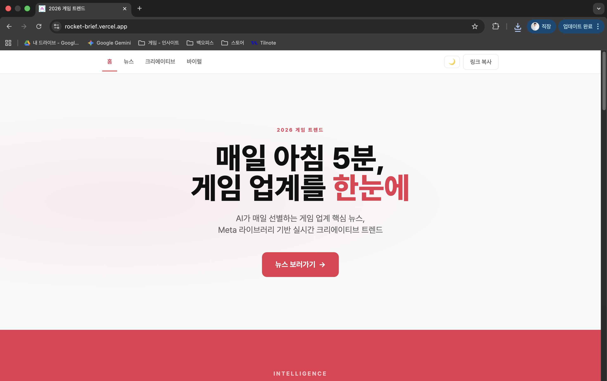
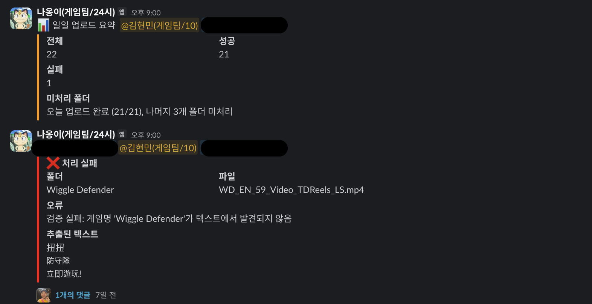
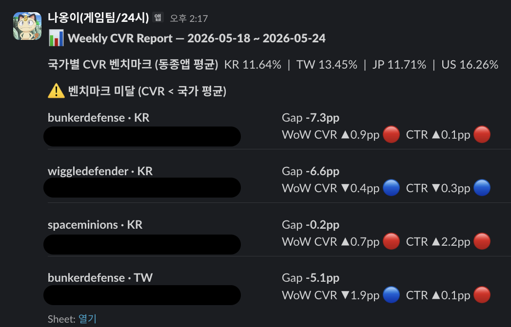

3개월간 AI 도구 26개를 만들면서 알게 된,
비개발자의 자동화 꿀팁들
스파르타 게임즈에서 마케팅 · 사업 · 피플 · 제작지원 4개 파트를 동시에 커버하고 있습니다.
작년 중순부터 커버해야 할 범위가 4배 늘었고, AI를 쓰는 게 선택이 아니라 생존이 됐습니다.
MVP · 글로벌 론칭 · LiveOps가 동시에 굴러감.
지표 이전에 '유저가 어떻게 느끼는가'가 먼저.
CPI · LTV · ROAS가 곧 게임의 수명을 결정.
마케팅 · CS · 사업까지 여러 파트를 동시에 맡다 보니,
자동화는 "효율"이 아니라 개인 · 팀의 "생존"을 위한 AX 가속이 되었습니다.
AI 활용의 병목은
기술이 아니라
문제 정의 능력이다.
3개월간의 도구 변천사 —
앱스크립트에서 클로드 코드까지.
2만 개 쌓인 메일함 정리부터. 시트 자동화로 시작.
대화형 노코드 빌더. 빠른 MVP 검증에 최적.
워크플로우 연결. 트리거 · 웹훅 · 스케줄까지.
직접 로직을 설계.
실무 적용이 목표라면 도구에 얽매이지 마세요.
앱스크립트만으로도, n8n만으로도 충분한 영역이 있습니다.
클로드 코드는 "작업 과정의 능률을 더 올리고 싶을 때" 비로소 필요한 단계였습니다.
맥락을 토대로 부분 수정이 빠르게 가능하며 퀄리티 컨트롤도 용이했습니다.
마케팅 에이전트 — 데일리 Airbridge → 슬랙.
잘 돌던 n8n 프로젝트를 재구축하진 않았습니다.
프로젝트가 끝없이 늘어나고, 복잡도가 높아진 환경에서는
분기를 최소화하거나 자율성을 높일 필요가 있었습니다.
마케팅 / 사업 / CS / 피플 — 직무별 자동화 아이디어와 실제 결과물.
한국·해외 게임 업계 뉴스를 매일 개별 사이트에서 수집하던 일을, RSS 15개 채널 → Claude 번역·Top 5 분석 → 매일 오전 9시 슬랙 자동 발송까지.
IGDB API로 향후 7일 출시 예정 게임도 자동 수집.
월 15시간 절감

① 콘텐츠 업로드 자동화 - 이상 알림

② 게임별 CVR 벤치마크 대비 & 증감 추이 알림
팀에 정착이 필요한 상황이라면 주요 채널 활용하기.
"추가적인 툴 학습은 최소화"가 팀 내 자동화의 1순위 원칙입니다.
'팀이 매일 쓰느냐'까지 같이 봤습니다.
기능은 OK, 기획/운영 디테일 관점이 부족했습니다.
ROI는 시간 절감만이 아니라 '팀이 매일 쓰느냐'로도 측정됩니다.
PM으로서 다시 느낀 기획의 중요성 —
문제정의 / PRD / CLAUDE.md 3단 세팅.
"왜 자동화하는가? 진짜 병목이 어디인가?"
우선 4가지만 명확히.
프로젝트 루트, 컨텍스트 유지.
"내가 매일 클로드에게 똑같은 설명을 반복하고 있다면, 그건 CLAUDE.md에 들어가야 할 내용."
중간에 스펙이 바뀌는 건 정상이고 불가피합니다.
다만 코어 로직(판단 기준)이 흔들리지 않도록 작은 단위로 쪼개서 만드세요.
MVP로 먼저 시작하고, 검증 후 확장하기.
비개발자가 사내 자동화 구축 시 챙겨야 할 3가지 측면.
접근성이 최우선. SSOT가 될 수 있어야.
MVP 이후를 염두에. 갈아엎지 않을 수준으로.
사내 프로젝트는 대부분 대외비.
배포 전에 무조건 이 프롬프트를 돌립니다.
우선순위 중 이상은 반드시 반영.
콘솔에 이슈 0, 최소한의 OAuth(공유 비번 + 미들웨어 쿠키) —
이 두 가지가 비개발자 보안의 최소 기준.
# 아래 코드를 배포 전 보안 리뷰해줘. [코드 붙여넣기] 스택: [프레임워크] + [배포 환경] + [DB/Auth 스택] # 15개 항목을 현재 코드 기준으로 진단 01. CORS 09. Rate Limit 02. CSRF 10. 쿠키 · 세션 03. XSS + CSP 11. Secret · Rotation 04. SSRF 12. HTTPS · 보안헤더 05. AuthN/AuthZ 13. Audit Log 06. RBAC · 테넌트 14. 에러 노출 07. 최소권한 15. 의존성 취약점 08. Input + SQLi # 출력 형식 | 항목 | 상태 | 위험도 | 수정 방향 | 상태: ✅ 구현 / ⚠️ 부분 / ❌ 없음 / ➖ 해당없음 위험도: High / Med / Low
외부 플러그인을 먼저 써보고, 필요한 것들은 직접 만든다.
학습 코스트를 줄일 수 있는 방법이었습니다.
구글 메일함 2만 개 정리부터 시작했습니다.
써본 경험이 쌓여야 '나만의 것'을 구축할 수 있습니다.
개인의 AX를 팀의 생존 전략으로.
시작은 '기술'이 아니라 '문제정의'입니다.
아낀 시간을 기대가치가 더 높은 일에 재배치.
KPI를 기준으로 한 판단을 규칙으로 옮기는 단계.
각자 처음부터 AX하면 리소스 부담이 큽니다.
어디서 시작할지 막막하다면, 내가 가장 잘 아는 영역에서 시간이 많이 들거나 반복되는 일부터. AI 기술보다 도메인 지식 · 문제정의 역량이 먼저입니다.
"나는 매일 어떤 판단을
반복하고 있지?
그게 규칙으로 쓰일 수 있나?"
코딩 능력이 없어도 됩니다.
논리적으로 문제를 정의할 수 있으면 됩니다.
직무 전문성이 있는 사람이 AI를 가장 잘 씁니다.
감사합니다. — 김현민 · 스파르타 게임즈